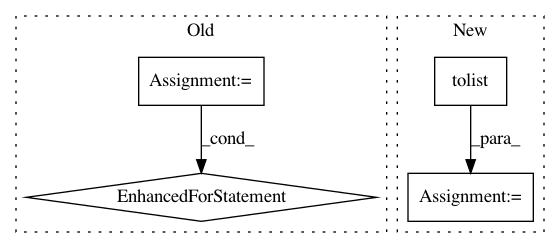

f58745ab284f48b7ef4ce813f5f8cd26bdb3c0a8,pgmpy/inference/Sampling.py,BayesianModelSampling,forward_sample,#BayesianModelSampling#,31
Before Change
cpd = self.cpds[node]
if cpd.evidence:
weights = []
for i in range(size):
evid = [sampled[var][i] for var in cpd.evidence]
weights.append(cpd.reduce(evid, inplace=False).values)
sampled[node] = sample_discrete(cpd.variables[cpd.variable], weights)
else:
// can generate the column at once
weights = cpd.values
After Change
for index, node in enumerate(self.topological_order):
cpd = self.cpds[node]
if cpd.evidence:
evidence = sampled.values[:, :index].tolist()
weights = np.apply_along_axis(lambda t: cpd.reduce(t, inplace=False).values, 1, evidence)
sampled[node] = sample_discrete(cpd.variables[cpd.variable], weights)
else:
sampled[node] = sample_discrete(cpd.variables[cpd.variable], cpd.values, size)
In pattern: SUPERPATTERN
Frequency: 3
Non-data size: 4
Instances
Project Name: pgmpy/pgmpy
Commit Name: f58745ab284f48b7ef4ce813f5f8cd26bdb3c0a8
Time: 2015-06-16
Author: ankurankan@gmail.com
File Name: pgmpy/inference/Sampling.py
Class Name: BayesianModelSampling
Method Name: forward_sample
Project Name: hanxiao/bert-as-service
Commit Name: 2bfe5bfcec7759ae022b1a479411aa7d1b8401f1
Time: 2019-05-06
Author: zyn2122@gmail.com
File Name: example/example7.py
Class Name:
Method Name:
Project Name: oddt/oddt
Commit Name: e626254b74ecb6dc71396c1b35237b53a5e35163
Time: 2017-08-23
Author: maciek@wojcikowski.pl
File Name: oddt/datasets.py
Class Name: pdbbind
Method Name: __init__